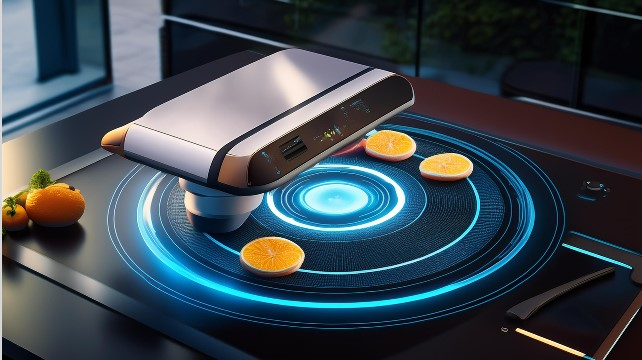
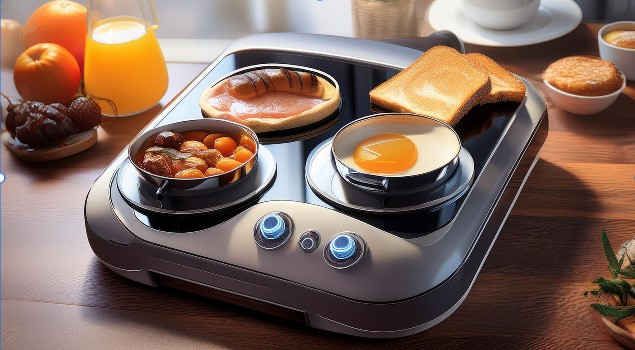

House Conveniences
1. Voice Clock
Conveniences: Hands-free operation means you can check the time or manage schedules without needing to interact with a physical device.
Efficiency: Quickly set reminders and alarms with simple voice commands, saving time and reducing the need to manually input data.
2. Voice Scheduling and Reminders
Organization: Helps you stay organized by setting and managing appointments, tasks, and reminders through voice commands.
Accessibility: Ideal for multitasking or for those with mobility issues, as you don’t need to physically interact with scheduling tools.
3. Breakfast Stove
 
Efficiency:Allows you to prepare breakfast with minimal effort. You can start cooking remotely, ensuring your meal is ready when you are.
Customization:Tailor cooking times and temperatures to specific recipes or preferences, potentially reducing cooking errors.